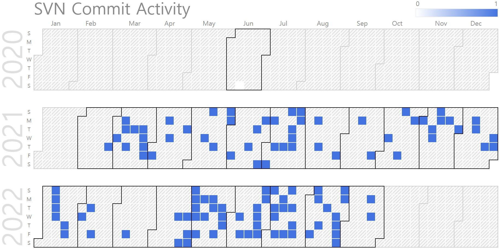

Dongkyu Jung (M.S. Candidate)
B.S. Candidate. |
Repository Commit History
|  |
Introduction
Full Bio Sketch
Mr. Jung is currently a B.S. student in School of Electronics Engineering at Kyungpook National University, Daegu, Republic of Korea. His research interests include multiple sensor control and data processing to High-precision/high-speed/low-power environment recognition and space recognition in microprocessors with General-Purpose computing on Graphics Processing Units. Currently, he is focusing on effective LiDAR data processing acceleration with microprocessor on-chip GPU.
Research Topic
 Pre-processing of sensor data used by vehicles from edge processors reduces data communication and throughput from vehicle main processors, which positively affects overall power consumption. He studies how to track and remove low-varying data from distance data-based LiDAR sensors compared to previous times, and partially update to reduce total data processing/transmission and propose a method to detect semantic meaningful motions within the image through a two-dimension convolution scheme for the entire data of frames based on time-based variation data. It is expected that such processors can be carried out in real time through acceleration using DCU's on-chip gpu.
Pre-processing of sensor data used by vehicles from edge processors reduces data communication and throughput from vehicle main processors, which positively affects overall power consumption. He studies how to track and remove low-varying data from distance data-based LiDAR sensors compared to previous times, and partially update to reduce total data processing/transmission and propose a method to detect semantic meaningful motions within the image through a two-dimension convolution scheme for the entire data of frames based on time-based variation data. It is expected that such processors can be carried out in real time through acceleration using DCU's on-chip gpu.
 For high-level autonomous vehicles, the self-driving processor determines the speed control and steering of the vehicle. Unlike conventional mechanical control, this creates an environment in which the individual control of each wheel is advantageous, rather than transferring power and steering by connecting multiple wheels into one axis with complete electronic control. He studies how to perform independent and immediate reactions using MCUs for individual vehicle wheel control using BLDC motors operated by direct current. Individual motor modules receive speed and steering control data from the central control system to control independent wheels in real time. Both control parameters are fatal to vehicle control and require rapid task control through the real-time system to the extent that they do not compromise the stability of the vehicle system. Real-time OS programming of low-power-small MCUs is expected to enable this control to be performed in real time.
For high-level autonomous vehicles, the self-driving processor determines the speed control and steering of the vehicle. Unlike conventional mechanical control, this creates an environment in which the individual control of each wheel is advantageous, rather than transferring power and steering by connecting multiple wheels into one axis with complete electronic control. He studies how to perform independent and immediate reactions using MCUs for individual vehicle wheel control using BLDC motors operated by direct current. Individual motor modules receive speed and steering control data from the central control system to control independent wheels in real time. Both control parameters are fatal to vehicle control and require rapid task control through the real-time system to the extent that they do not compromise the stability of the vehicle system. Real-time OS programming of low-power-small MCUs is expected to enable this control to be performed in real time.
Publications
Journal Publications (KCI 1, SCI 1)
Dongkyu Jung and Daejin Park. Semantic Object Detection based on LiDAR Distance-based Clustering Techniques for Lightweight Embedded Processors (KCI) Journal of the Korea Institute of Information and Communication Engineering, 2022.
Dongkyu Jung and Daejin Park. Efficient Object Detection Using Semantic ROI Generation with Light-weighted LiDAR Clustering in Embedded Processors (SCI) Sensors, 2023.
Conference Publications (Intl. 3)
Dongkyu Jung and Daejin Park. Real Time Sensor Signal Processing Techniques Using Symmetric Dual-Bank Buffer on FreeRTOS In IEEE LifeTech 2021, 2021.
Dongkyu Jung and Daejin Park. Accelerated On-Chip Algorithm based on Semantic Region-based Partial Difference Detection for LiDAR-Vision Depth Data Transmission Reduction in Lightweight Controller Systems of Autonomous Vehicle In 2021 IEEE 14th International Symposium on Embedded Multicore/Many-core Systems-on-Chip (MCSoC), 2021.
Dongkyu Jung and Daejin Park. RTOS-based Task-Driven Scheduling for Vehicle Independent BLDC Motor Control In IEEE 49th Annual Conference of the IEEE Industrial Electronics Society (IECON 2023), 2023.
Patents (Domestic 3)
LiDAR Data Transmission Method for Reducing LiDAR Data Transmission Amount, Apparatus and System for Performing the Same In Korea Patent and Tradmark Office, June 2022. Korea Patent Pending
Object Detection Device and Method using Low-Resolution LiDAR Sensor In Korea Patent and Tradmark Office, June 2022. Korea Patent Pending
System and Method for Recognizing Object based on LiDAR In Korea Patent and Tradmark Office, June 2022. Korea Patent Pending
Participation in International Conference
IEEE LifeTech 2021, Osaka, Japan
IEEE MCSoC 2021, Singapore
IEEE IROS 2022, Kyoto, Japan
IEEE IECON 2023, Singapore, Singapore
Last Updated, 2023.11.04